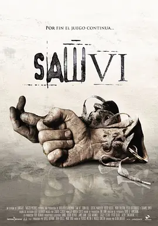

7.9
电锯惊魂6
Saw VI
2009
美国
评分 7.9
导演:
凯文·格劳特
演员:
托宾·贝尔 / 科斯塔斯·曼迪勒 / 马克·罗斯顿 / 贝茜·拉塞尔 / 肖妮·史密斯
类型:
恐怖,悬疑,惊悚
剧情简介
黎明前的空气带着潮湿的寒意，而威廉·伊斯顿醒来时，已经被铁链束缚在一处陌生空间。墙面斑驳的油漆不断剥落，地面像被鲜血长期浸染过般暗沉。他原本依靠公式计算他人生命价值，从中获利，却从未想过有一天自己也会成为被计算的对象。在竖锯留下的录音中，那冷静而克制的声音提醒他，每一道抉择都将由他亲手决定他人的生死，而他过去的每一个“拒保”都将化为新游戏的惩戒。威廉在阴暗的走廊间穿行，机关的机械声如野兽般低吼，提醒他时间正在不断缩短。曾在他办公室里被视为“条目”的人们，如今以另一种方式回到他的面前，迫使他亲身面对那些冷酷公式背后的真实痛苦。他的每一步都夹杂着惊慌、悔意和求生本能，而每一次选择都让他直面过去的道德黑洞。城市另一端，马克·霍夫曼继续以竖锯继承者的身份隐藏在警局内部。他沉着地操控情报、掩盖真相，但斯特朗之死带来的疑点正在悄然扩大，同僚的怀疑如阴影般尾随在他身后。霍夫曼试图以更激烈的手段掩埋真相，却反而让裂痕扩散。一场内外交错的追捕逐渐浮现，而竖锯“救赎游戏”的精神与霍夫曼暴力偏执的行径之间的对比，也在故事中愈发鲜明。威廉的求生路与警方的调查线在暗处交汇，层层线索将过去与当下串联成一张紧绷的网。随着机关不断启动，残酷与自省并存，每一个镜头都像在揭开更多旧伤。到最后，无论是威廉还是霍夫曼，都将意识到竖锯所留下的遗产并不是简单的复仇或惩罚，而是一场长久而扭曲的审判。